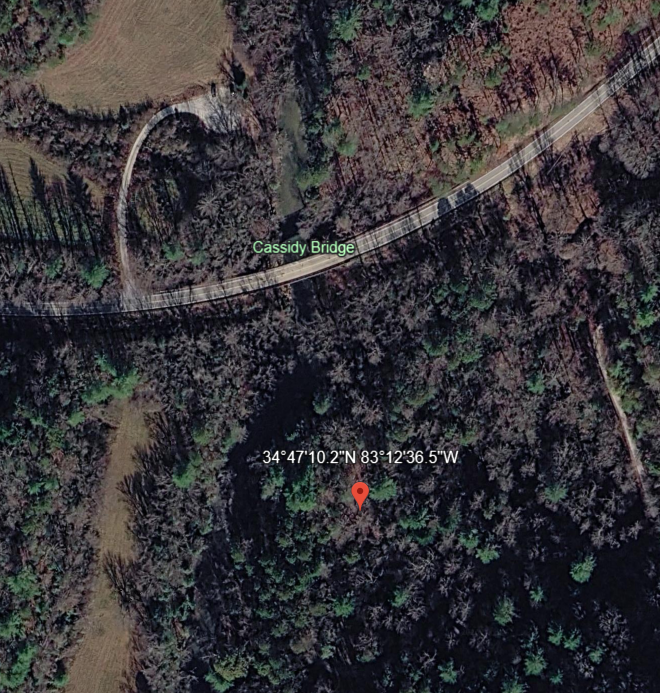

1986 - Pilot Episode (October)
1988 - First year at Grapevine (February)
1996 - First year at Burrells Ford (The Hole)
1997 - First year at Burrells Ford (Ridley Branch/Reed Creek side)
2026 - First year at Cassidy Bridge Primitive Camp (AKA: Hunt Camp)
Our Traditions Since Year One
The playing of Pink Floyd's 'Comfortably Numb' at exactly midnight on
Saturday.
The sacrifice of a chair to the fire while 'Comfortably Numb' plays.
As of 2017, 'Comfortably Numb' and chair sacrifice will take place at 10:00 pm on Saturdays.
Rules
Obey all rules.
Official start of camping trip is noon on Friday.
Official end of rule enforcement is midnight on Saturday.
Only Elders and members of the Board of Directors are allowed to possess a whistle and call penalties on campers.
The disposal of a can requires an underhand toss with the phrase,
'Incoming!' while can is in the air.
When the phrase 'Incoming!' is uttered, at least one camper must respond with
the phrase, 'Covered!'.
An Elder can call a 'Social' at any time. All campers will respond by
taking a drink.
If you bring a drink to another camper, it should be opened.
No bottles!
If you are not performing some work effort, have a can within reach at all
times.
No urinating within a 20 foot radius of center of fire or near the kitchen.
Anyone handling food for preparation MUST wear rubber gloves.
Whether visiting or camping, if you drive into camp, you better have a minimum
of one stick of wood.
No Gambling and No Foul Language (we are lenient on this one)
Rule Amendments
As requested by Pepper, there will be no flatulence at the card table. (2015)
At the age of 60, you are no longer required to gather wood prior to the camping trip. But all help is appreciated. (2015)
Satellite image of our current location (34.786153, -83.210132)

Click HERE for Weather Forecast by GPS Coordinates